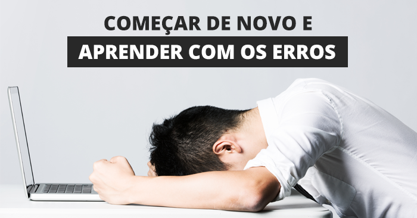

|  |
Tomar uma decisão errada faz parte da vida, tanto no trabalho como na vida pessoal. Mas todo mundo merece uma segunda chance, concorda? Até porque ninguém nasceu sabendo, principalmente quando se está começando um novo trabalho ou uma nova carreira. Errar faz parte do processo de aprender e empreender.
Quem decide começar um novo negócio, seja em qualquer área: seja uma padaria, uma escola de dança, um cabeleireiro ou uma empresa de tecnologia… Deve saber que as falhas vão acontecer e farão parte da nova rotina. E acredite, elas vão ajudar você no caminho do sucesso. Porque a gente sabe que é errando que se aprende.
Para encarar tudo isso, é preciso resiliência. Sabe aquela capacidade que a gente tem de lidar com seus próprios erros e resistir, tentar de novo, encontrar um novo jeito? Isso é resiliência. É o dar a volta por cima. Enfrentar obstáculos e não ceder à pressão. E é nisso que você vai se apoiar para encarar um novo desafio no trabalho.Acreditando em você acima de tudo.Fonte:http://redefelicidade.com.br/trabalhe-feliz/carreira/errar-pode-ser-bom/ |